Estude do básico ao avançado com conteúdos organizados, ilustrados e fáceis de revisar pelo celular, tablet ou impresso.
Mapas ilustrados e organizados para facilitar seus estudos e revisões rápidas.
Mensagens reais de quem já está usando o Kit de Mapas Mentais.
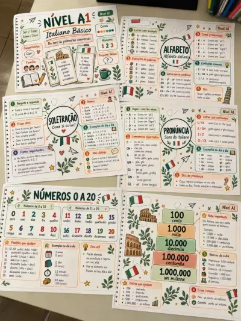
“Comprei achando que seria só mais um PDF comum, mas o material é muito mais organizado do que eu esperava. Os mapas são bonitos, fáceis de entender e dá vontade de continuar estudando.”
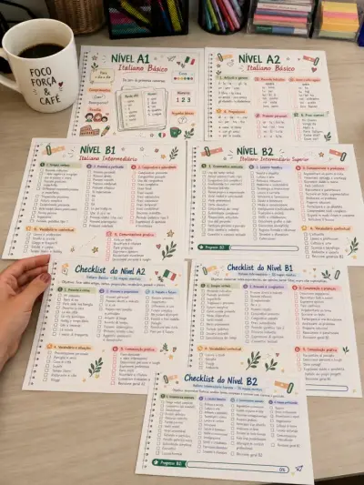
“Minha rotina é corrida e eu não consigo fazer aulas longas. Com o plano diário, estudo um pouco por dia e já sei exatamente qual material abrir. Ficou muito mais fácil manter uma rotina.”
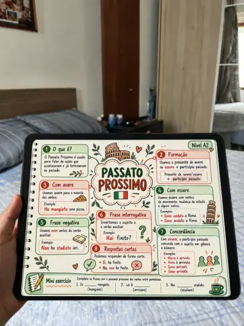
“Eu ainda não imprimi nada e mesmo assim estou usando normalmente pelo celular e pelo tablet. Os mapas ficam bem legíveis e consigo estudar em qualquer lugar.”
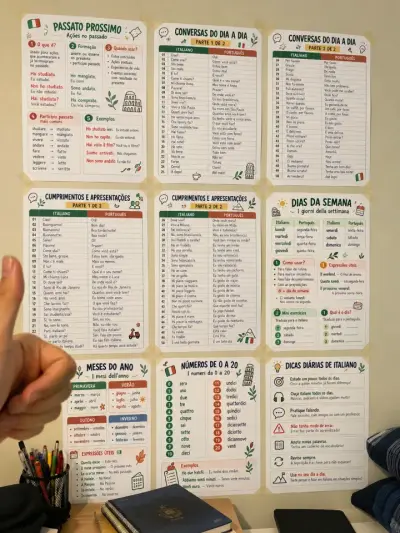
“As 500 frases com pronúncia foram o bônus que mais usei. Eu escuto, repito e treino até me sentir mais segura para falar.”
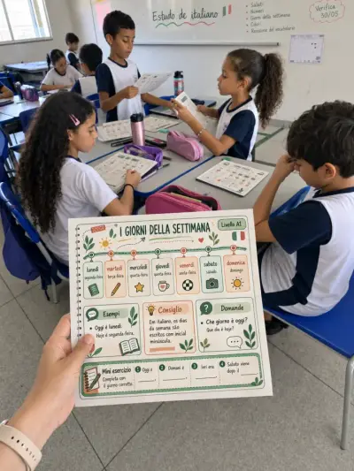
“Sou professora de italiano e esse kit economizou muito meu tempo. Uso os mapas para explicar e revisar os conteúdos de forma mais visual com meus alunos.”
“Comprei achando que seria só mais um PDF comum, mas o material é muito mais organizado do que eu esperava. Os mapas são bonitos, fáceis de entender e dá vontade de continuar estudando.”
“Minha rotina é corrida e eu não consigo fazer aulas longas. Com o plano diário, estudo um pouco por dia e já sei exatamente qual material abrir. Ficou muito mais fácil manter uma rotina.”
“Eu ainda não imprimi nada e mesmo assim estou usando normalmente pelo celular e pelo tablet. Os mapas ficam bem legíveis e consigo estudar em qualquer lugar.”
“As 500 frases com pronúncia foram o bônus que mais usei. Eu escuto, repito e treino até me sentir mais segura para falar.”
“Sou professora de italiano e esse kit economizou muito meu tempo. Uso os mapas para explicar e revisar os conteúdos de forma mais visual com meus alunos.”
Os mapas são divididos estrategicamente de acordo com os níveis oficiais de aprendizado (A1 a C2).
Selecione um dos níveis acima para explorar os assuntos detalhados dos mapas mentais.
Objetivo: Ensinar você a reconhecer palavras essenciais, montar frases curtas, fazer perguntas básicas e se comunicar em situações simples.
Objetivo: Ajudar você a falar sobre rotina, preferências, habilidades, passado básico e planos.
Objetivo: Permitir que você converse sobre experiências, acontecimentos, opiniões, planos e problemas cotidianos.
Objetivo: Desenvolver fluência, naturalidade, compreensão de textos mais complexos e comunicação profissional.
Objetivo: Ensinar precisão, flexibilidade, vocabulário sofisticado e comunicação acadêmica ou profissional.
Objetivo: Trabalhar sutilezas, registros, persuasão, interpretação e comunicação próxima à de um usuário altamente proficiente.
Um guia visual projetado para ajudar estudantes em qualquer fase de aprendizado.
Ideal para quem está iniciando e quer um caminho visual estruturado e direto, sem precisar decorar regras complexas.
Perfeito para rotinas corridas. Você consegue revisar tópicos inteiros em apenas 3 minutos no celular, tablet ou computador.
Feito para quem odeia ler apostilas densas e cansativas e prefere aprender direto ao ponto de forma visual e intuitiva.
Aceleradores de aprendizado inclusos na oferta, sem custo extra.
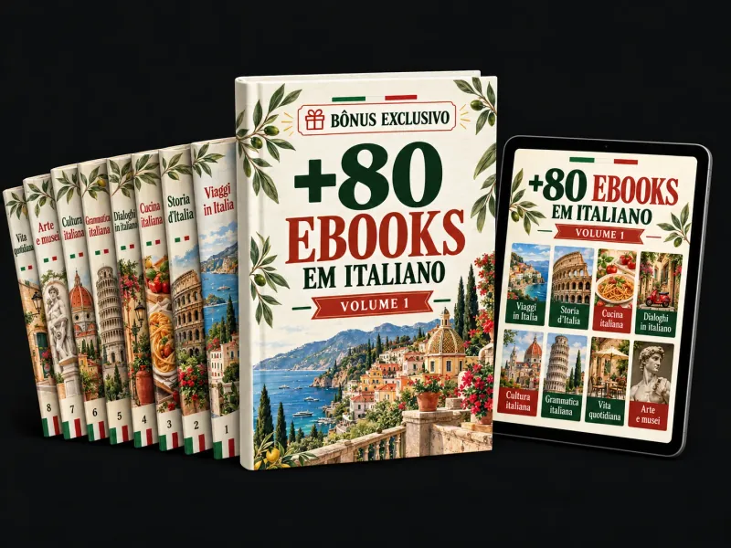
📚 82 Ebooks + Audiobooks
Pratique leitura, escuta, vocabulário e pronúncia com uma biblioteca completa em italiano.
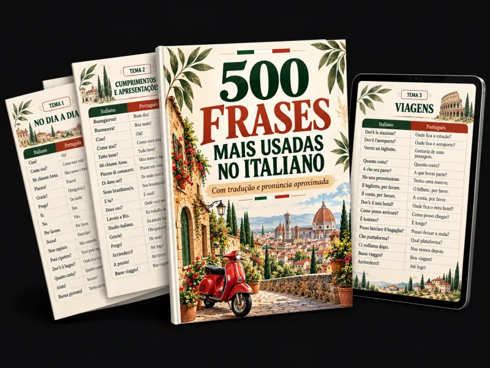
🗣️ 500 Frases Mais Usadas com Pronúncia
Aprenda frases úteis para conversas, viagens, trabalho, mensagens e situações do dia a dia.
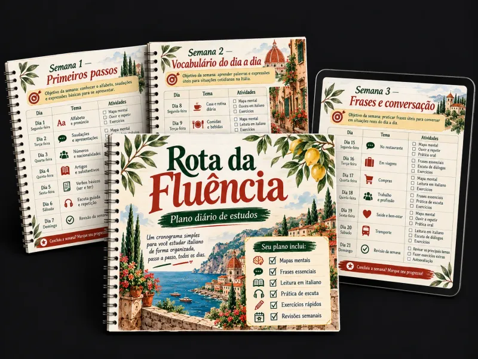
📅 Plano Diário de Estudos
Saiba exatamente o que estudar a cada dia e avance sem ficar perdido.
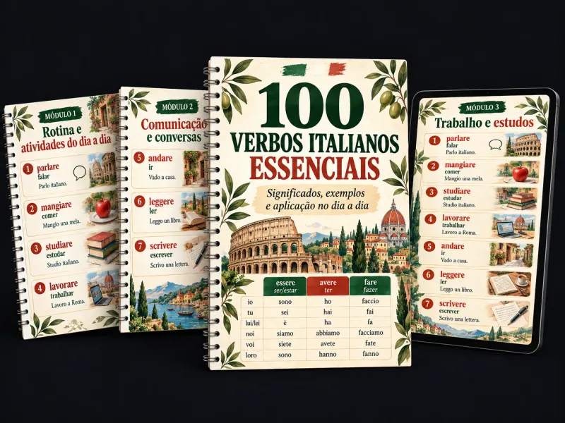
⚡ 100 Verbos Essenciais
Aprenda os verbos mais usados no italiano real com significado, exemplos e aplicação no dia a dia.
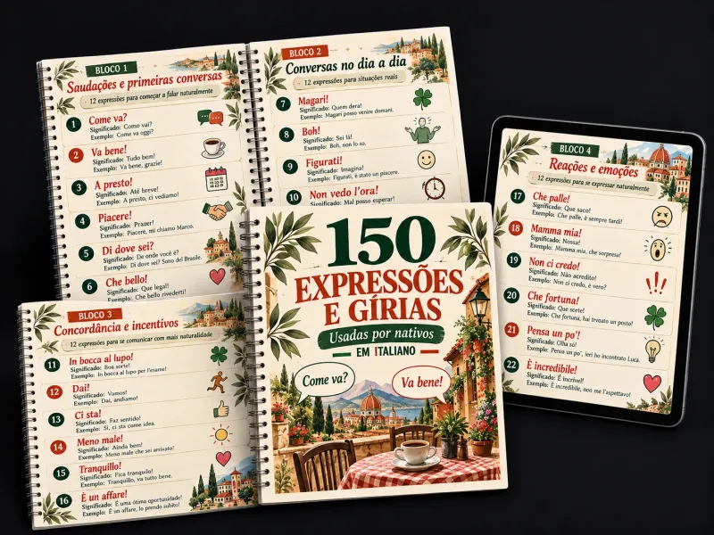
🗣️ 150 Expressões e Gírias Mais Usadas
Aprenda como os nativos realmente falam, com expressões naturais, abreviações e exemplos para usar no cotidiano.
Resumo da compra
Você pode acessar e testar o material durante 7 dias. Caso sinta que o Kit de Mapas Mentais não é para você, basta solicitar o reembolso dentro do prazo da garantia.
Você conhece o conteúdo sem correr nenhum tipo de risco.
O envio é feito de forma 100% digital, segura e automática.
Assim que o seu pagamento for processado (PIX cai na hora, Cartão leva poucos segundos), o sistema dispara o acesso.
Você receberá um e-mail com as instruções detalhadas e o link exclusivo para baixar todo o material.
O material é 100% digital em formato PDF de alta resolução. Você pode abrir direto nas suas telas ou imprimir quando quiser.
Tire suas dúvidas rápidas sobre o funcionamento do Kit.
Não. O material possui conteúdos básicos e avançados, permitindo que você comece mesmo tendo pouco ou nenhum conhecimento.
Não. O produto é 100% digital. Você recebe o acesso online e pode imprimir os mapas se desejar.
Sim. Você pode acessar o material pelo celular, tablet ou computador.
Sim. Os mapas foram desenvolvidos em alta resolução para serem visualizados digitalmente ou impressos.
Após a confirmação do pagamento, você receberá as informações de acesso ao material no e-mail cadastrado na compra.
Não. Você paga apenas uma vez e recebe o acesso vitalício ao kit que escolher.
Sim. Os cinco bônus e as atualizações fazem parte da oferta e são liberados junto com os mapas.
Você pode estudar no seu ritmo. Mesmo alguns minutos por dia podem ser usados para revisar um ou mais mapas.
O Kit é um material complementar para aprendizado, estudo e revisão. Ele não promete fluência automática e pode ser combinado com outras formas de prática.
Sim. Você possui 7 dias após a compra para testar o material e solicitar o reembolso, caso não fique satisfeito.
Pagamento único de R$ 27,90 com tudo incluso. O preço promocional será reajustado em breve.
Aprenda italiano de forma simples, visual e direta ao ponto.
Quero Garantir Agora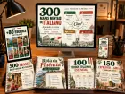
✓